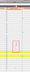

Citrix Receiver 13
Dieser Artikel wurde für die folgenden Ubuntu-Versionen getestet:
Ubuntu 16.04 Xenial Xerus
Ubuntu 14.04 Trusty Tahr
Zum Verständnis dieses Artikels sind folgende Seiten hilfreich:
Der Citrix Receiver ist ein Client zur Nutzung von Citrix-Serverdiensten. Die Software kann auf so gut wie allen gängigen Endgeräten (PC, Mac, iPhone, iPad etc.) verwendet werden, um bereitgestellte Anwendungen und ganze Desktops „on demand“ zu nutzen. Dabei spielen Art und Ort des Endgerätes keine Rolle, was den Verwaltungsaufwand in der Regel deutlich minimiert.
Die früher als Citrix ICA Client bezeichnete Software liegt in zwei Versionen vor. In diesem Artikel geht es um die neuere Version 13.x. Eine ältere Version wird im Artikel Citrix Receiver 12 beschrieben.
Installation¶
Es wird das 64-bit-Debian-Paket von der "Citrix Receiver for Linux"-Downloadsite benötigt. Dieses lässt sich beispielsweise über das Ubuntu Software Center installieren.
Hinweis!
Fremdpakete können das System gefährden.
Werkzeuge¶
Config Manager¶
Allgemeine Einstellungen wie z.B. Verbindungsverhalten, Dateizugriffe usw. können über das mitgelieferte Konfigurationswerkzeug configmgr eingestellt werden.
/opt/Citrix/ICAClient/util/configmgr
Falls man einen Programmstarter für dieses Programm benötigt, muss eine .desktop-Datei mit dem Namen /usr/share/applications/icaconfigmgr.desktop und folgendem Inhalt angelegt werden:
[Desktop Entry] Encoding=UTF-8 Version=1.0 Type=Application Name=Citrix Config Manager Categories=Application;Network;X-Red-Hat-Base;X-SuSE-Core-Internet; Icon=/opt/Citrix/ICAClient/icons/manager.png TryExec=/opt/Citrix/ICAClient/utils/configmgr Exec=/opt/Citrix/ICAClient/utils/configmgr --icaroot /opt/Citrix/ICAClient
Connection Manager¶
Es gibt ein weiteres Werkzeug, welches aktuelle Verbindungen anzeigt. Diese können dann abgemeldet bzw. getrennt werden.
/opt/Citrix/ICAClient/util/conncenter
Falls man einen Programmstarter für dieses Werkzeug benötigt, muss eine .desktop-Datei mit dem Namen /usr/share/applications/icaconncenter.desktop und dem folgenden Inhalt angelegt werden:
[Desktop Entry] Encoding=UTF-8 Version=1.0 Type=Application Name=Citrix Config Manager Categories=Application;Network;X-Red-Hat-Base;X-SuSE-Core-Internet; Icon=/opt/Citrix/ICAClient/icons/manager.png TryExec=/opt/Citrix/ICAClient/utils/conncenter Exec=/opt/Citrix/ICAClient/utils/conncenter --icaroot /opt/Citrix/ICAClient
ICA Browser¶
Ein kommandozeilenbasierter-ICA Browser.
/opt/Citrix/ICAClient/util/pnabrowser
Command-line ICA Browser
Copyright 1998-2014 Citrix Systems, Inc.
All rights reserved.
Usage: pnabrowse [ Options ] [ Server | PNA URL ]
Options:
-S List available ICA servers
-A List available ICA published applications
-c create ICA files
-d specify XDG desktop file (with -L only).
-e show error numbers
-f include application folders
-i include application icons (32 pixels wide and 4 bits per pixel)
-iWxB include application icons W pixels wide and B bits per pixel
-k use Kerberos authentication
-r application icons as raw data
-m print a series of miscellaneous options:
'Publisher name' 'Video Type' 'Sound Type'
'AppInStartMenu' 'AppOnDesktop'
'AppIsDeskTop' 'AppIsDisabled'
'Window Type' 'Window Scale' 'Display Name'
Only items 1 and 4-7 are available with -E.
-M like -m but takes a numeric (1-1023) argument
used as a bitmap to select individual columns.
Add 1024 to generate 'desktop' files with -E
-E enumerate published resources
-L launch a connection to a published resource
-U specify username
-P specify password
-N specify new password
-D specify domain
-Wr reconnect disconnected applications on this Web Interface
-WR reconnect active and disconnected applications on this Web Interface
-WD disconnect applications from this Web Interface
-WT terminate applications from this Web Interface
-u specify proxy username
-p specify proxy password
-q Do not display error messages
-V Display version details
-h Display this help screen
-? Display this help screenDeinstallation¶
Bei Bedarf eine Sicherung der Citrix-Einstellungen erstellen:
cd $HOME mv $HOME/.ICAClient $HOME/.ICAClient_save
Alternativ löschen:
rm -rf $HOME/.ICAClient
Das Citrix-Paket deinstallieren:
sudo dpkg -P icaclient
Ggf. ist noch ein manuelles Löschen des Verzeichnisses /etc/icaclient nötig:
rm -rf /etc/icaclient
Problembehebung¶
Fehlerhafter Programmstarter¶
In der Datei /usr/share/applications/selfservice.desktop ist ein Fehler enthalten. Dadurch lässt sich der Receiver nicht starten. Abhilfe: die Zeile
Exec=/opt/Citrix/ICAClient/selfservice -icaroot /opt/Citrix/ICAClient
muss mit einen Editor und Root-Rechten in
Exec=/opt/Citrix/ICAClient/selfservice --icaroot /opt/Citrix/ICAClient
korrigiert werden (Quelle: Citrix-Forum  ).
).
Firefox¶
Siehe auch den Hauptartikel zu Citrix.
Firefox-Plugin Installation reparieren (nur 64-Bit)¶
Beginnend mit der Version 13.1 benutzt die 64-Bit-Variante des Citrix-Receivers anstatt eines 32-Bit-Plugins (mit nspluginwrapper, damit es in einem 64-Bit-Browser funktionieren konnte) ein natives 64-bit-Plugin. Leider ist das Installationsskript fehlerhaft und konfiguriert das Plugin immer noch so, als ob es innerhalb nspluginwrapper laufen soll, was mit einem 64-bit-Plugin nicht funktioniert. Die Befehle konfigurieren das Plugin zum Laufen ohne nspluginwrapper neu.
sudo rm -f /usr/lib/mozilla/plugins/npwrapper.npica.so /usr/lib/firefox/plugins/npwrapper.npica.so sudo rm -f /usr/lib/mozilla/plugins/npica.so sudo ln -s /opt/Citrix/ICAClient/npica.so /usr/lib/mozilla/plugins/npica.so

Grafikfehler¶
Über XenApp 6.5 und den Receiver 13.1 treten reproduzierbar Grafikfehler während des Scrollens in Excel-Dokumenten auf, die jedoch teilweise auch wieder durch Scrollen verschwinden.
Zwischenablage¶
In einer XenApp-6.5-Umgebung (über XenApp-Webinterface) funktioniert Kopieren und Einfügen nur von der Citrix- in die lokale Sitzung, nicht in die Gegenrichtung.
Links¶
Citrix Product Documentation
- Offizielle Dokumentation zum Citrix Receiver 13.3Downloadportal Citrix Receiver
- Citrix Receiver, aktuelle VersionCitrix ICA Client HowTo
- Citrix Receiver 13.1Citrix ICA Client HowTo Older Versions
- Citrix Receiver 13.0 oder älterCitrix ICA Client - Hauptartikel
- Erstellt mit Inyoka
-
 2004 – 2017 ubuntuusers.de • Einige Rechte vorbehalten
2004 – 2017 ubuntuusers.de • Einige Rechte vorbehalten
Lizenz • Kontakt • Datenschutz • Impressum • Serverstatus -
Serverhousing gespendet von